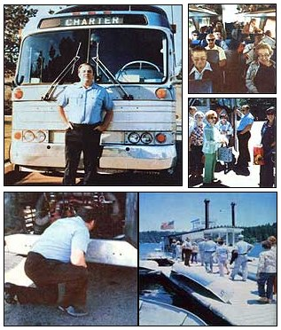

CLOCKWISE FROM ABOVE : Larry Gates's used passenger bus represents a $23,000 investment, but it brings in an impressive $35,000 annual income (plus 200 days of free ""vacationing"" a year) .... Senior citizen groups, community service organizations, and children's clubs are often the best sources of patrons for Larry's offbeat charter tours .... By always assuming a casual attitude?and calmly dealing with situations as they arise?Larry makes sure his tour participants get a little something extra for their money .... Knowing your area ""like the palm of your hand"" is the only way to compete with larger tour operators .... Larry does most of his bus's service maintenance himself and advises anyone going into the charter bus business to enroll in a short course in diesel mechanics.